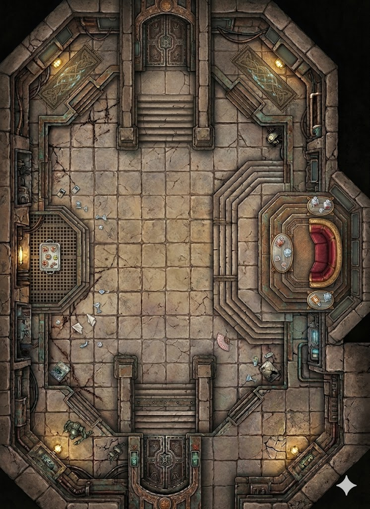

Varga's audience chamber, active and occupied. The Hutt holds court here — receives delegations, brokers deals, dispenses favors, and reminds everyone in the room that they are guests in his space. The room is built to make that point without anyone having to say it. The ceiling is high, the dais is elevated, the guards are everywhere, and the acoustics carry. Everything here is performance. Including whatever the heroes need to accomplish.
The main court floor — guests in cautious clusters, serving droids on rotation, guards at every column. The acoustics carry. Conversations happen in the middle distance where they're audible without being legible. Scattered debris from the evening: napkins, a dropped document, the lid of a container.
Elevated on concentric steps — Varga on his throne, attendants at the base, Gamorrean guards blocking the stairs. Drinks trays within reach. A bowl of something live. No one approaches without being waved forward. The debris of his hospitality is scattered across the lower steps.
Demos's position during court. Security terminal, full view of the dais and both entrances. He stands with hands folded and an expression of pleasantness. He notices when you notice him. He smiles.
The edge of the room — trophies, weapon displays, glazed cases. Guests who prefer walls to centers drift here. Conversations that want to go unheard happen here. Clear view of the dais and main floor from a remove.
Open during court, propped by iron stops. Gamorrean guards at attention on each side. A protocol droid announces arrivals in a flat monotone that barely carries over the room. Decorative panels flank the entrance.
A stairway at the south end marked RESTRICTED — STAFF ACCESS in Neimoidian script. No one from the court floor acknowledges it. Guards at the bottom, out of sight. The existence of a lower level is not a subject for conversation at Varga's court.
One step down from the main floor. The logistics infrastructure of the court — a protocol droid managing serving droid coordination, crates of replacement stock, a terminal cycling supply readouts. Functional, invisible, essential.
Two Trandoshan guards stationed here with sight lines to the dais stairs and lower level access. Fully stocked weapons rack on the east wall. Blaster carbines, vibroblades in a locked case. If something happens in this court, the response comes from here.
The collective murmur of thirty conversations at once — a constant low pressure that fills the room without individual words. The clink of Varga's credit-chains when he shifts his weight. Serving droids moving in practiced silence. The occasional flat announcement from the protocol droid near the doors. Varga's laughter when he finds something amusing — not a pleasant sound.
Warm amber from wall sconces — the room's primary light source, intentional, flattering to Hutt skin. The dais is the brightest point, elevated into the sconce light. The alcoves and gallery are slightly dimmer, their shadows useful. Blue indicator lights on the southeast status panels, cold against the amber. The upper tapestry panels near the grand doors reflect warm light back into the room.
Incense — heavy, resinous, burning from unseen sources, designed to cover the smell of Varga himself. It doesn't fully work. Underneath: food smells from the serving trays, the sharp clean scent of imported alcohol, the organic warmth of too many bodies in a sealed space. Demos's scented oil if you get close enough to the east alcove. Stone dust from the cracked floor.
Warm — Varga runs warm and his environmental preferences shape the room. Slightly stuffy near the center where guests cluster. Cooler along the west gallery where the stone wall hasn't absorbed the body heat. A faint draft from the lower level stairway carries cool air upward. The dais radiates additional warmth from Varga's bulk and the repulsor system in the platform base.